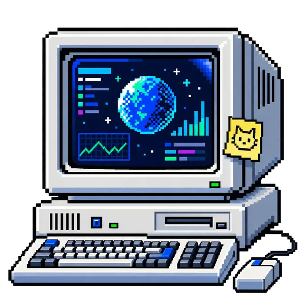

ABOUT/CARDANO
DISCOVER. VERIFY. MEASURE. PUBLISH.
INDEX:80 is an independent index of the Cardano ecosystem — projects, data, education and governance — built to be useful to people, search engines, developers and AI systems alike.
INDEPENDENT & OPEN SOURCE
INDEX:80 is an independent project created and maintained by Adam Winstanley.
INDEX:80 software is licensed under Apache-2.0. INDEX:80 structured data and original editorial content are licensed under CC BY 4.0. Third-party logos, images, screenshots and marks remain the property of their respective rights holders and are outside those licences; the INDEX:80 name, logo and original brand and mascot artwork are reserved.
View the source and open files on GitHub → Read the Charter →
HOW INDEX:80 THINKS
/ METHODhistory · web · chain
official sources
activity evidence
HTML + JSON

Every page here is plain HTML, CSS and JSON — the same open, machine-readable interface a 1989 terminal and a 2026 browser (or an AI system) can both read directly, with nothing gated behind an app or a login.
EDITORIAL & OPEN WEB CHARTER
The Charter is INDEX:80's approved governing document. It sets out editorial independence, the requirement that a human reviews every record before publication, how evidence is gathered and labelled, and a firm rule: payment never buys inclusion, ranking, Featured status or editorial influence.
WHAT “VERIFIED BY INDEX:80” MEANS
A verified record means an editor has checked the project's identity, relevant public links and current public presence sufficiently to include it in the index. The aim is to give people a defensible route to the genuine project and explain the evidence behind that decision.
Verification is not an endorsement. It does not mean INDEX:80 has audited the project's code, guarantees its security, certifies its token, confirms every claim made by its team, or recommends an investment.
THE FIVE-QUESTION PUBLICATION TEST
Before a project is published, the editor should be able to answer five simple questions:
- Identity — Are we confident this is the project it claims to be?
- Destination — Have we identified the best current canonical destination?
- Currency — Is there reasonable evidence that the project or resource currently exists in the state we describe?
- Evidence — Could we explain which sources led us to that conclusion?
- Human review — Has an editor actually looked at the record and its primary link?
If those questions cannot be answered adequately, the record stays in review rather than being published automatically.
WHAT WE MEAN BY A “QUALITY BAR”
INDEX:80 does not rank projects, score investment merit or tell people what to buy. When we say a project has passed our quality bar, we mean that it has passed the publication test above and there is enough current, explainable evidence to justify including it in the index.
For project spotlights, we may also explain the particular evidence that stood out — for example active building, useful tools, open-source work, community contribution, clear project identity or other verifiable signals. That is editorial judgement, not a guarantee of security, token value, future success or investment performance.
COMMUNITY STAKE POOL STANDARD
Cardano has thousands of stake pools. INDEX:80 does not try to list them all. The Community Stake Pools category is a deliberately selective group of operators whose contribution to Cardano goes beyond routine block production.
To qualify, we look for:
- Current operation — an active on-chain pool and a current official public presence.
- Clear identity — a verifiable operator or team, pool identity and canonical links.
- Independent/community-led operation — smaller and single-pool operators are preferred; large exchange or institutional pool farms are outside the purpose of this category.
- Contribution beyond running a pool — for example tools, education, governance participation, open-source work, community support, events, content, charitable work or other useful ecosystem activity.
- Recent activity — reasonable evidence that the operator is still contributing to Cardano, not simply maintaining an old website or pool registration.
- No unresolved material concerns — if identity, activity or public claims cannot be supported well enough, the record stays in review.
Independent multi-pool operators can still appear where they are clearly community-led, but they are lower priority for spotlighting than smaller pools. Selection is not based on advertised APR, pool size, token incentives or payment to INDEX:80.
This category is curated rather than comprehensive and is reviewed over time. Inclusion means the operator passed this editorial standard at the time of review; it is not a recommendation to delegate and does not guarantee future pool performance.
SUPPORT INDEX:80
INDEX:80 is free to use and its code and public data are open. The site is deliberately designed to be inexpensive to host, but researching projects, checking sources, maintaining records, improving the platform and keeping information current all take real time and resources.
The project exists to support the wider Cardano ecosystem: helping worthwhile projects become easier to discover, giving newcomers a clearer route into Cardano, and creating an open source of information that can also be understood by search engines, developers and AI systems.
If you can’t donate, following @index80web on X and sharing our content really helps too. It is one of the simplest ways to support the project and help more people discover what is being built on Cardano.
If you choose to support INDEX:80, thank you. Every donation goes directly back into the resources needed to research, maintain and develop the project.
addr1q8lk4p3p8436ng24x6gkglrrsrhhnn4kc0v6sff4plj2h6fgze77r90ayy3ufsusdzwj8g7j28hw68dgwy4dm5tnamhqax3ezt
WHO BUILDS THIS
INDEX:80 was created by Adam Winstanley (@Sharedculture on X), a long-time crypto participant and active Cardano community member.
I have been involved in crypto since 2013 and active in Cardano since 2021 — collecting NFTs, joining communities, supporting builders and following projects across the ecosystem. Some have grown into strong and lasting communities; others have disappeared along the way. Through all of it, I have continued to believe that Cardano has an unusually deep pool of serious builders, creative projects and useful technology that deserves to be easier to discover.
INDEX:80 grew from the frustration of trying to find current projects through dead links, outdated directories, fragmented social timelines and information that is often hard for outsiders or newcomers to piece together. The aim is to make that discovery layer simpler: direct links, durable records, open-web infrastructure and clear information that is useful to existing users, newcomers, search engines, developers and AI systems alike.
More than anything, I built INDEX:80 to support the people building good things on Cardano — to help worthwhile projects get found, generate more attention and traffic from outside the ecosystem, and make Cardano easier to understand for someone arriving for the first time.
For new project records, ecosystem discoveries and site updates, follow the official INDEX:80 account on X or LinkedIn.
Research, drafting and technical work are assisted by a structured, multi-AI editorial process, while final editorial judgement remains human. See the Editorial & Open Web Charter for how that works.
CORRECTIONS ARE PART OF THE SYSTEM
An open index has to be correctable. If a project link, classification, description, identifier or status is wrong, send a correction or project submission or email hello@index80.com. Changes are reviewed rather than silently accepted, and material history is preserved where it helps explain what changed.
LOOKING AHEAD
I remain strongly optimistic about Cardano.
Not every project will survive, and the ecosystem has already been through cycles of hype, disappointment and change. But underneath that noise there are still exceptional builders, committed communities and years of serious technical work continuing to move forward.
I believe Cardano has much more to offer than most people outside the ecosystem currently see.
INDEX:80 exists partly to help change that.
If we can make the best projects easier to discover, make reliable information easier to find, help newcomers understand where to begin, and give search engines and AI systems a clearer view of what is actually being built here, then more of that work has a better chance of reaching the audience it deserves.
The next chapter of Cardano will be written by the people who keep building. I’m excited to see what comes next — and I hope INDEX:80 can play a small part in helping people find it.